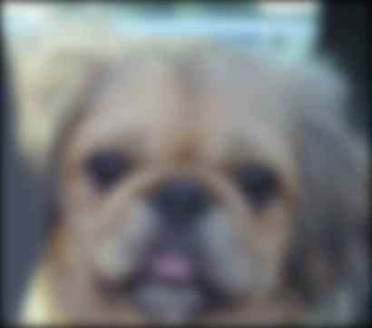
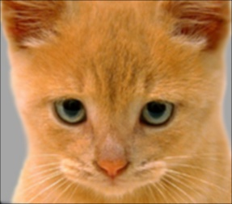
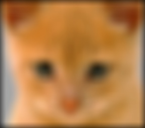
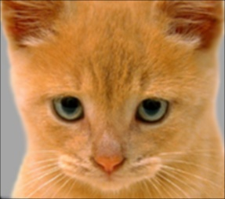
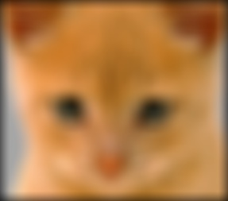
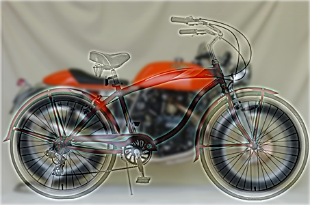
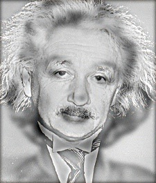
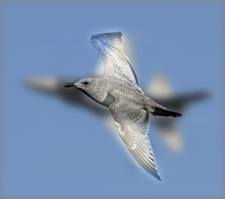
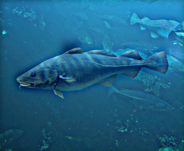

Project 1: Image Filtering and Hybrid Images
Hyrid image for cat.bmp and dog.bmp
In this project an algorithm to do image filtering was developed. The filter developed works the same way as the filter2D function in the OpenCV library. This filter was used for creating Hybrid Images by blending high-frequency portion of one image with low-frequency portion of another image. Characteristics of the filtering algorithm are:
- Works for RGB images as well as Greyscale.
- Supports filters of any size (odd dimensions).
- Pads the input image with zeros to take care of edges while performing convolution operation.
- The filtered image is of the same dimensions as the input image.
- The algorithm works for separable filters as in case of large blur filter in the proj1_test_filtering.ipynb
A Gaussian Kernel was given and the image had to be convolved with it. The im_filter() does the convolution operation. Kernel convolution requires pixel values outside of the image. Zero padding was used for taking care of the edges. I added filter_size//2 number of zeros on all sides of the image. The algorithm takes 2.12 seconds for the large blur separable filter case.
Hybrid Images
The output of the im_filter() was a blur image with just the low frequencies present. In order to generate hybrid images, we need to combine a low frequency image with the image containing high frequencies. In order to get high frequency image, the low frequency component,obtained from im_filter(), was subtracted from the original image. The resulting two images were combined (using mathematical sum operation) to generate a hybrid image. Sometimes, while adding two images, the pixel values may exceed 1 or go below 0,hence,the hybrid image had to be clipped so that pixel values lie between 0 and 1.The np.clip function was used for this purpose. The blurry_dog image, identity filter image, small blur with box image, large blur along with different hybrid images are put in the result table.
Results in a table

 



|
|     |
In addition to the dog.bmp and cat.bmp, a few more combination of images were tried. For the einstein.bmp and marilyn.bmp, the cut-off frequency was set to 3, in order to be able to get different interpretations at different distances. Similarly,for the bicycle.bmp and motorcycle.bmp, the cut-off frequency was changed to 2.